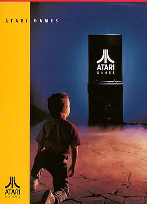

This is where it all began. Syzygy, oopps... I mean Atari
started in the wonderful world of Coin-Op/Arcade entertainment in 1972.
Their first product under the Atari name was called PONG. This
simple, yet addictive game sparked what is now a 7 billion dollar industry.
Some will argue that the arcade division was the only true part of Atari
even though the consumer division with the Atari 2600 took the spotlight
most of the time. In 1972 there were no video games, only pinball
machines, fortune tellers, ball toss and other obscure forms of Coin-Op
amusement. Once PONG hit the scene there was no stopping the
tidal wave force of those magical cabinets with the glowing screens and
the musical beeps. Atari in a sense
has come full circle in its 25+ years of existence. It all
started with arcade games, then came the home consumer games, then the
computers, then it went back to just arcade games at Atari once again.
No matter what the future brings, all of us have been touched in one way
or another by the phenomenon called....
Atari
January 14, 2000: On a truly sad note, it has been made official, Atari Games Corp. which is a subsidiary of Midway Games after it was purchase by Midway/Williams in 1996 has announced that it will no longer manufacture arcade games under the Atari Games Corp name anymore. San Francisco Rush 2049 is the last Atari Games Corp game. All future games coming from 675 Sycamore Drive in Milpitas, California will now be under the name Midway Games West. It is a truly sad day to see the very name which launched the Video Arcade Industry no longer used on coin-op games. Midway is doing an injustice to itself and the industry by discontinuing the use of the Atari Games name and logo.
To view Atari Games Corp's last coin-op to bear the Atari name and logo,
visit the official San Francisco Rush website located at: http://www.rush2049.com